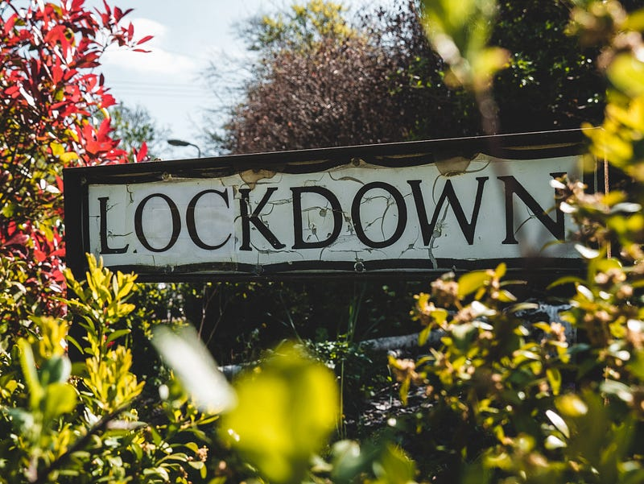
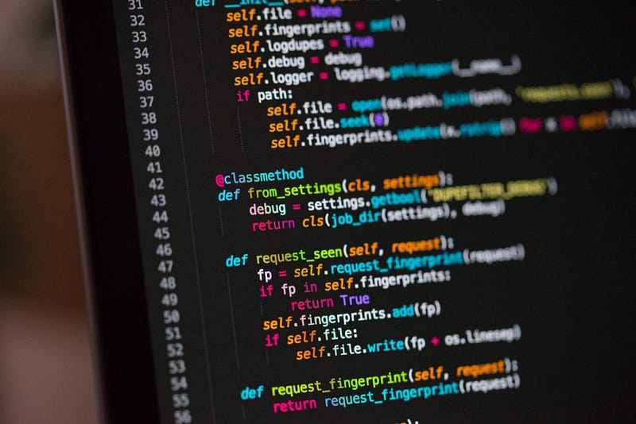

It has taken me a long time but I finally feel like I have found something that I thoroughly enjoy. My journey so far through web development and coding has been insightful, fun, and fulfilling.
I found myself sucking up information like an industrial vacuum whilst being glued to the screen following tutorials and figuring out concepts that were a bit foggy to me at first.
The virus & Lockdown

2020 has been quite the year. Not since the era of the second world war have we seen such disruption across our daily lives and jobs. This disruption however has brought with it challenges both old and new as well a great sense of adaptability amongst people who in some cases have had to completely change their daily routines, how they shop, work, play, and generally interact with other people.
Back at the end of March, the company I work for told everyone that we would be working from home, we still are as well 8 months on, but this home working and all this free time we’ve been having with lockdowns and restrictions has almost unlocked this new path for me and turned my thinking around.
About a month into lockdown 1.0 in April I felt pretty terrible, a heavy dose of anxiety that was just awful, it lasted for weeks but once I had got over this it started to unfold in front of me, and from that moment I knew I wanted it. I can think of it as one of those great life-changing moments that opened up a new sixth sense or something. The clarity grew and I started analyzing everything around me.
Looking at what was going in the UK with furlough, people losing jobs, and the general swift towards remote working, I felt that securing skills that would be wholly flexible, scalable, and offer me many different routes was something that I have to achieve. Greater autonomy, choose where I work, where I go, how I go about my work became my focus. My current job that I have done for the last 5 or so years just doesn’t do it for me. It does not give what I want and that doesn’t just relate to earnings but growth, development, and opportunities for advancement.
Coding

After a long couple of months trying my hand at all sorts of things and gaining knowledge in web design, design principles, digital marketing, writing, creating, I was reading a piece online about software development and programming and all these people who have gained new skills through it. Now originally I had designed websites through visual coding tools such as Webflow, but I never felt that it was necessarily scalable due to you being glued to and relying on a particular tool in order to work.
I started however to read more into development and programming and particular web development. Now I had previously been exposed to some of the HTML and CSS terminology and concepts but never felt that I could do them myself, I mean I don’t come from a computer science background and was never the best at mathematics in school but I felt that I should go for it and see how I felt about it.
Well, this where my new love affair has begun. Never have I ever gone into something and found myself this excited about what could lie ahead for me.
I started with the HTML and CSS basics, took some online courses, built a few websites myself as well as with the use of frameworks such as Bootstrap, Materialise, and Skeleton CSS. From this, I have then built up my knowledge of Javascript starting with the basics and building on it more and more with ES6 aspects and using NPM package manager to bring in packages to build greater and greater things. So far Javascript has been the biggest challenge for me to fully get to grips with but the more I do the more it is coming to me and the more my love of programming grows.
I am looking to build on this further and move into the MERN stack (MongoDB, Express.js, React.js, Node.js), I will be even further than and use traditional server languages like PHP, more frameworks, and possibly even Python and blockchain languages. For now, this is for the coming months and currently I am fully focused on Javascript and building my skills in this language.
Recently as well I found been producing more and more social media posts for Instagram and Twitter based on elements of Javascript that not only help me in building and cementing knowledge but also hopefully will help other people exactly like other people have helped me get to this point by imparting their knowledge of programming and development.
Looking towards the future, gaining a development job with a company or going it alone in a freelance role will be my ultimate goal. It will be even better once I fully get into the Blockchain and De-Fi space and start to learn how to develop using Web3 or Solidity. A role working in this sort of environment would be an absolute dream. Being part of building the future and building on technology that may potentially change society would right now be a dream come true.
So for now I am going to get stuck into some more now and get back to my new favorite thing but I will be sharing more posts relating to software design, design patterns, anti-patterns, and software architecture.
As we all know knowledge is king and the more you know and understand the better you become.
Follow me on Twitter & Instagram:
Newer: DeFi.
Older: Wireless Charging. Potential disaster or nothing to be concerned about?
First published on Medium.